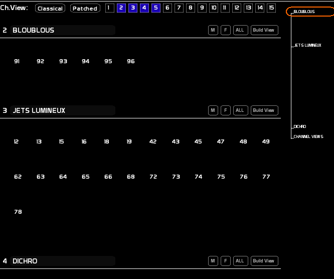
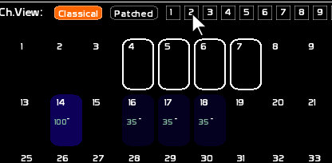
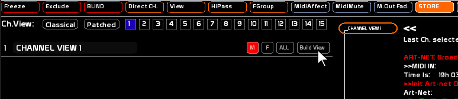

Les [Channels Views] permettent de personnaliser l'affichage de l'espace circuits. Elles sont activables et désactivables à la volée.
En mode [Channels Views], seuls les circuits présents dans au moins une vue active sont accessibles — à la souris comme au clavier.

La première Channel View (« Patched ») est en lecture seule — elle reflète automatiquement le contenu du patch.
Les 15 autres Channel Views sont librement configurables par l'utilisateur.
Créer une Channel View
Sélectionner dans l'espace [Classical] vos circuits
Enclencher [STORE] ( [F1] )
cliquer la case de la Channel View

Retirer un ou plusieurs circuits d'une Channel View
Sélectionner les circuits
cliquer [Modify] ou faire [F2]
cliquer la case de la Channel View
Rajouter un ou plusieurs circuits à une Channel View
Cette opération peut se faire depuis le mode [Classical] ou d'autres Vues.
Sélectionner les circuits
cliquer [Modify] ou faire [F2]
cliquer la case de la Channel View destination
Basculer un ou plusieurs circuits d'une Channel View à l'autre
Sélectionner les circuits
cliquer [Report] ou faire [F3]
cliquer la case de la Channel View destination
Donner un descriptif à une Channel View
Cette génération de Channel View est statique.
Si vous créez une Channel View à partir d'une mémoire, et que vous retirez ou ajoutez plus tard des circuits dans cette mémoire, la Channel View ne sera pas modifiée — elle n'est pas reliée de manière dynamique.
Générer à partir d'une mémoire
Enclencher la pastille [M] de la Channel View
Taper le numéro de mémoire ( existant dans le séquenciel )
cliquer [Store] ou faire [F1]
cliquer [Build View]

Générer à partir d'un fader
La création sera faite à partir du dock actif. Un état dynamique ( chaser, trichomie, gridplayers ) sera pris en compte dans son état au moment de l'enregistrement : les circuits supérieurs à 0 seront pris en compte.
Générer à partir de toutes les mémoires
Enclencher la pastille [M] de la Channel View
Enclencher la pastille [ALL]
cliquer [Store] ou faire [F1]
cliquer [Build View]
Générer à partir de tous les faders
Enclencher la pastille [F] de la Channel View
Enclencher la pastille [ALL]
cliquer [Store] ou faire [F1]
cliquer [Build View]
Générer à partir de tous les faders et les mémoires
Enclencher les pastilles [M] et [F] de la Channel View
Enclencher la pastille [ALL]
cliquer [Store] ou faire [F1]
cliquer [Build View]